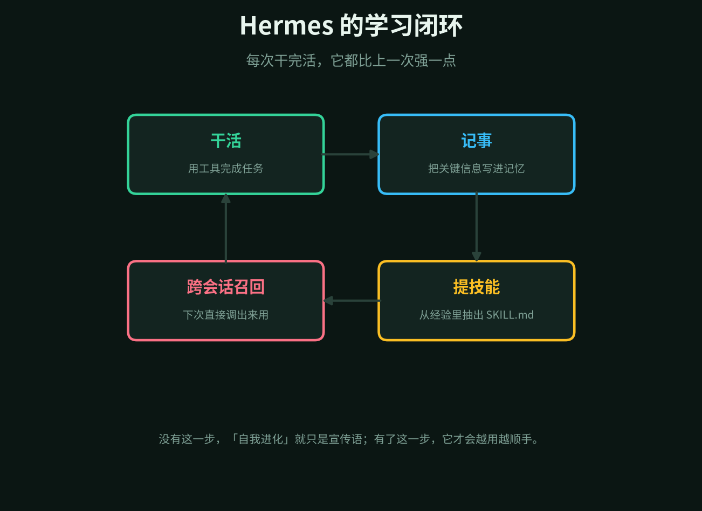
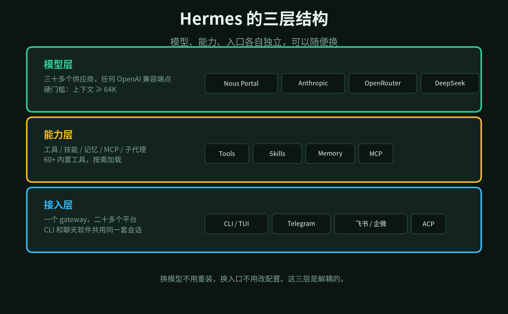
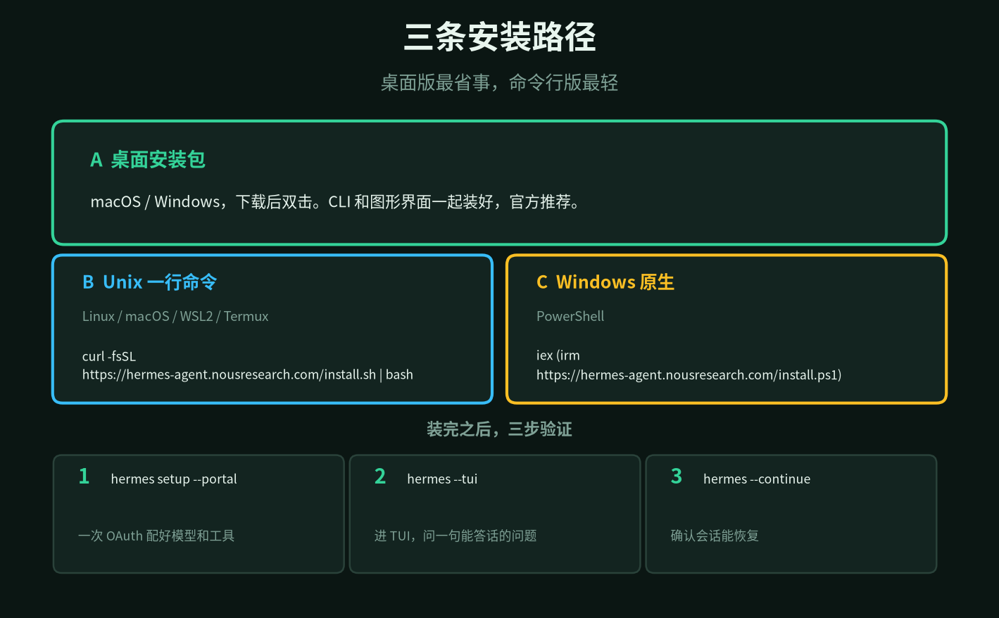
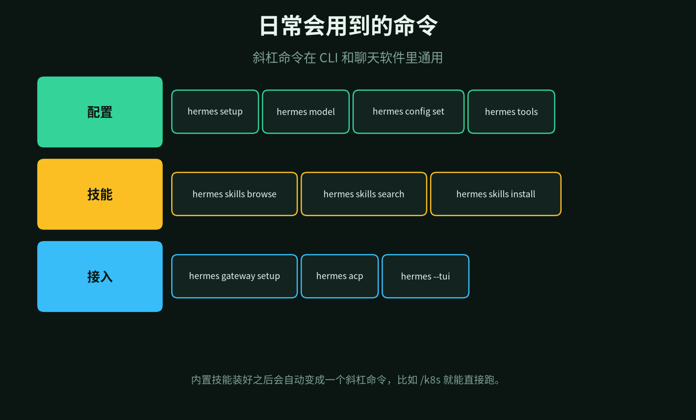

Nous Research 出了一款 agent，叫 Hermes Agent。这家实验室你可能听过——Hermes、Nomos、Psyche 几个开源模型都是他们训的。
官方首页第一句话挺冲：内置学习闭环的 agent，只此一家。
宣传口径先放一边。把文档翻完，它确实和 Claude Code、Cursor 那类工具不是同一个物种。这篇按「是什么 → 学什么 → 装 → 用」的顺序拆。
1
它不是一个 IDE 插件
文档里这句话值得抄下来：它既不是绑在 IDE 上的编码助手，也不是包着单个 API 的聊天壳。
它是一个自主 agent，跑得越久能力越强。你把它放在哪，它就在哪活——5 美元的 VPS、GPU 集群，或者 Daytona、Modal 这类闲时几乎不花钱的无服务器环境。
所以典型用法是这样的：你在 Telegram 里发一句，它在云上的 VM 里干活，你根本不用 SSH 进去。它不拴在你的笔记本上。
终端后端给了六种：本机、Docker、SSH、Daytona、Singularity、Modal。前三种是把命令跑在哪定下来，后三种是让它休眠也能留着环境。
入口给了二十多个。CLI 和 TUI 只是其中两个。Telegram、Discord、Slack、WhatsApp、Signal、Matrix、邮件、短信，还有钉钉、飞书、企业微信、QQ 机器人，都能接。一个 gateway 统一管。
2
学习闭环：它自己长技能
这是全篇最该讲清楚的一节。
别的 agent 的技能是人事先写好的。Hermes 不一样：它干完活会自己提炼出一份 SKILL.md，下次遇到同类任务直接调出来用，用着用着还会改。

干活 → 记事 → 提技能 → 下次召回，四步转一圈。
具体拆成三件事：
记忆：它自己整理记忆，还会定期提醒自己「该存点什么了」。跨会话召回用的是 FTS5 全文检索加 LLM 摘要，不是把历史对话一股脑塞进上下文。
技能：技能就是一份带名字、描述和步骤的 SKILL.md。它平时只读描述（几乎不花钱），真碰到对应任务才加载全文。所以技能装一百个也不会把每次请求撑爆。
用户建模：接了 Honcho，跨会话一点点攒出「你是谁、你要什么」。这个我觉得是最容易被低估的一块。
三段拼起来才叫闭环。少一段，所谓「自我进化」就只是个词。
3
三层结构：模型、能力、入口
文档没这么分，是我读完之后的归纳。这么分的好处是：想换任何一层，都不用动另外两层。

三层解耦。换模型不用重装，换入口不用改配置。
模型层支持三十多家供应商。Nous Portal、Anthropic、OpenAI Codex、OpenRouter、DeepSeek、Kimi、通义、Gemini、Grok、GitHub Copilot，还有 Ollama、LM Studio、vLLM 这类自建端点。
有一条硬门槛要单独说：上下文至少 64K token，低于这个值启动就被拒。理由是窗口太小撑不住多步工具调用的工作记忆。跑本地模型的话记得把 ctx 拉到 64K 以上。
能力层是六十多个内置工具、技能系统、记忆、MCP 服务器，还有子代理并行。
接入层就是那二十多个平台，外加 ACP 编辑器集成。
4
怎么装
三条路，按你的系统挑一条就行。

桌面装最省事，一行命令最轻。
macOS 和 Windows 用户直接去官网下桌面安装包，CLI 和图形界面一起装好，官方推荐这一条。
不想装图形界面，Linux / macOS / WSL2 / Android Termux 一行命令：
curl -fsSL https://hermes-agent.nousresearch.com/install.sh | bash
Windows 原生就在 PowerShell 里跑：
iex (irm https://hermes-agent.nousresearch.com/install.ps1)
装完记得重载 shell，source ~/.bashrc 或 source ~/.zshrc。
然后配模型。这一步最重要，别跳。
最省事的是 Nous Portal：一次 OAuth 登录，模型和四个工具（联网搜索、文生图、TTS、云浏览器）一起开通。
hermes setup --portal
想自己带 key，用 hermes model 交互式挑供应商。首次 hermes setup 会给三个模式：快速（Portal OAuth）、完整（自己走每个选项）、空白（除了模型、文件操作、终端，其余全关）。
配置分两个文件存，这点做得干净：密钥进 ~/.hermes/.env，非密钥设置进 ~/.hermes/config.yaml。用命令行改会自动分到对的文件里。
hermes config set model anthropic/claude-opus-4.6 hermes config set terminal.backend docker
5
怎么用
先跑一次普通对话，别的都往后放。
hermes # 经典 CLI hermes --tui # 新版 TUI，有弹层和鼠标选择 hermes --continue # 或 -c，恢复上一次会话
进去之后会看到一个欢迎横幅，写着当前模型、可用工具、已装技能。这时候问一句能验证的问题，比如让它总结当前仓库、列出磁盘占用最大的五个目录。
打一个 / 会弹出命令补全。常用的就几个：/help、/tools、/model、/save。
技能这块值得单独说。安装、搜索、浏览：
hermes skills browse hermes skills search kubernetes hermes skills install openai/skills/k8s
装之前会先跑一次安全扫描，这点比很多同类工具讲究。
装好的技能会自动变成一个斜杠命令。/k8s deploy the staging manifest，直接带着需求跑；只打 /k8s 就加载技能再问你要干什么。
命令不多，一张图能装下：

配置、技能、接入，三组命令足够日常用。
要做成机器人或常驻助手，等 CLI 跑通之后再 hermes gateway setup，选平台。
要让它别乱动你的本机，把终端后端换成容器或远程：
hermes config set terminal.backend docker hermes config set terminal.backend ssh
接 MCP 服务器就在 config.yaml 里加一段 mcp_servers，写法和其他 MCP 客户端一样。要在编辑器里用，hermes acp 起 ACP 服务。
6
几句实话
Hermes 的差异点不在工具数量，也不在支持的平台数。是那个闭环。
但闭环有个前提：它得先真的干成几件事，才有经验可提炼。你如果只拿它问天气，它长不出任何东西。
官方文档自己写了一条经验法则：如果 Hermes 连一次普通对话都跑不通，就别急着加功能。先把一次干净的对话跑通，再往上叠 gateway、定时任务、技能、语音、路由。
1. 它是自主 agent，不是 IDE 插件。放 VPS 或云上都行，通过 Telegram 之类入口远程指挥。
2. 学习闭环由记忆、技能、用户建模三块拼成，缺一块就不成立。
3. 装法三选一，桌面包最省事，curl 一行最轻。
4. 模型上下文必须 ≥ 64K，这是启动时的硬校验，本地模型记得调 ctx。
5. 顺序别乱：先普通对话 → 再技能 → 再 gateway → 最后定时和路由。
文档地址：hermes-agent.nousresearch.com/docs 仓库：github.com/NousResearch/hermes-agent